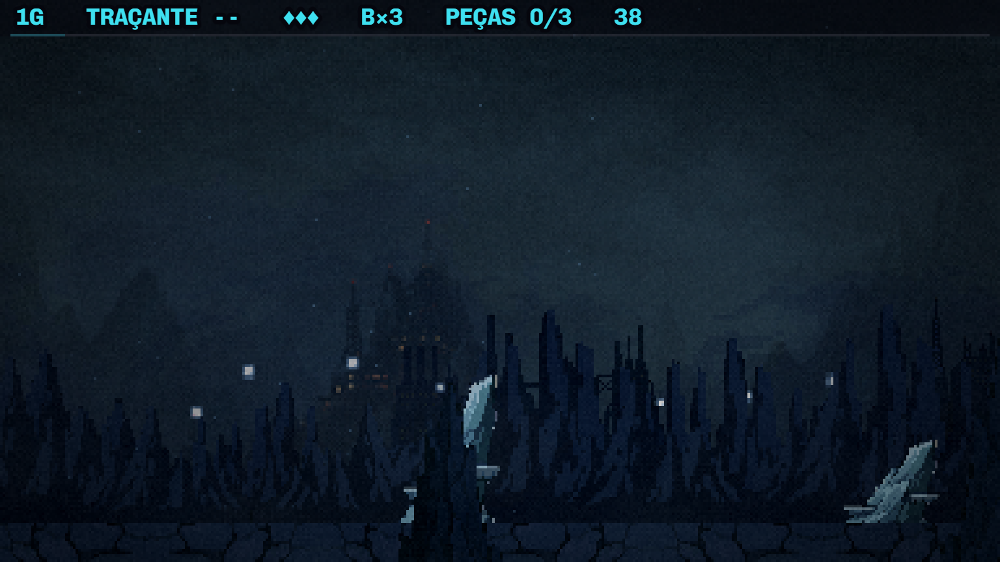
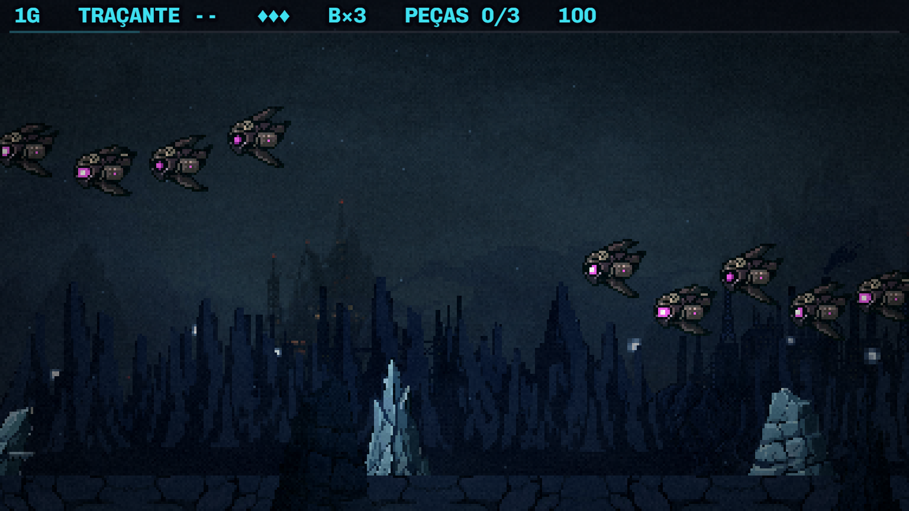
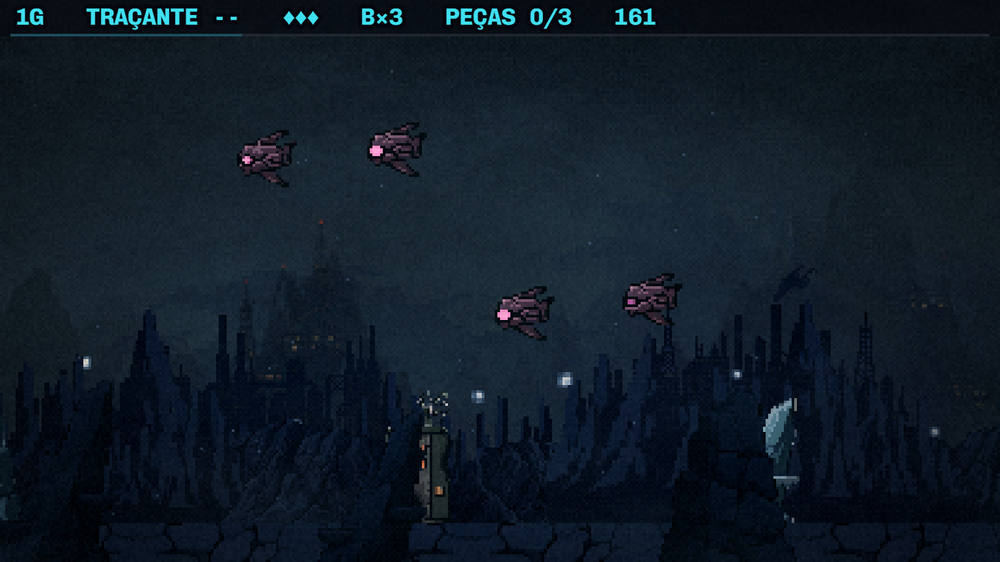
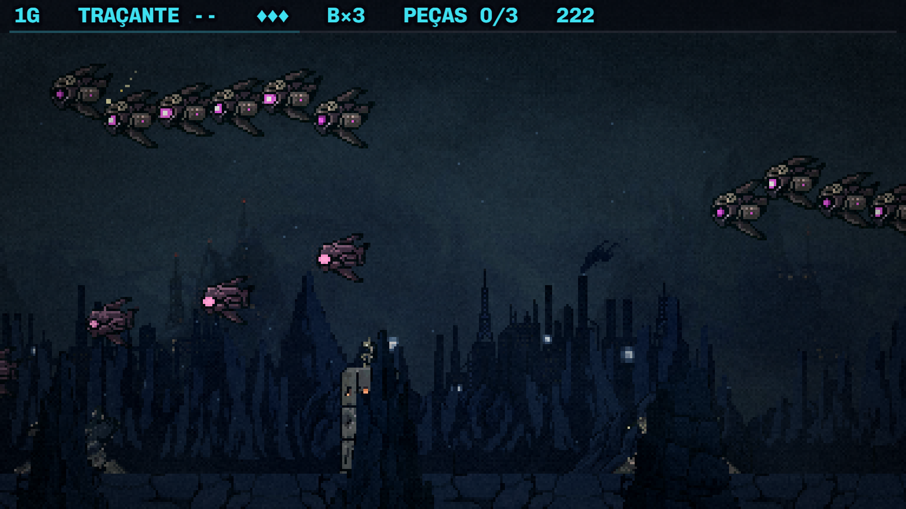
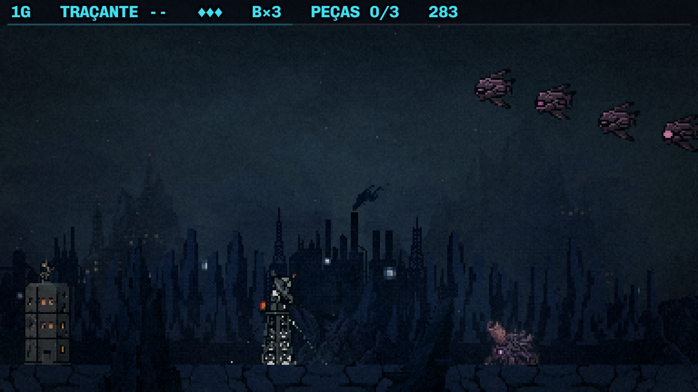
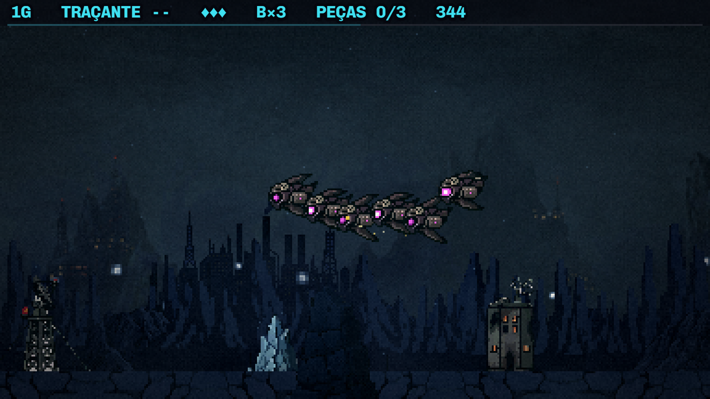
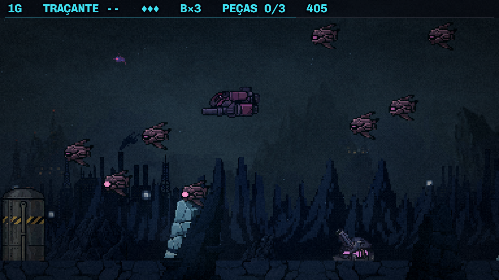
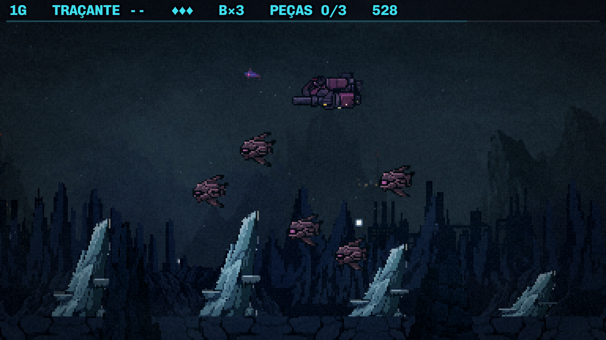
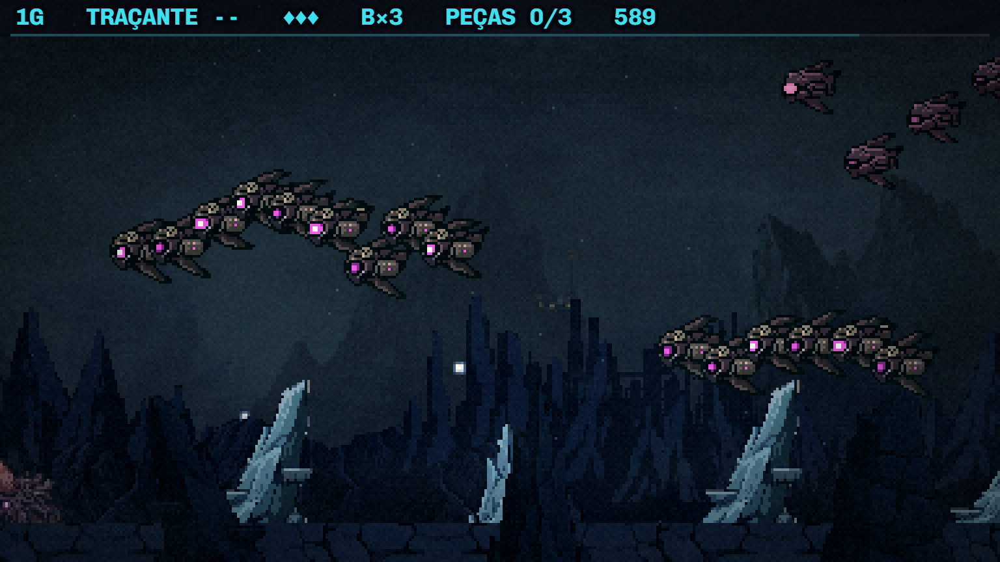

Fase 1 · o cenário hoje
20/10/2026 · abertura do bloco G. Esta folha mostra a fase como ela está, para você apontar o que incomoda antes de eu gerar qualquer arte. Nada aqui mudou no jogo.
A fase em jogo
Fotos do jogo de verdade, a nave parada no canto de cima, a cada 6 segundos.










As camadas, do fundo para a frente
| camada | a arte | |
|---|---|---|
| 1 | céu degradê em código | — |
| 2 | fundo pintado só cenário 768×394, rola a 4% do mundo, posto 80 px acima do topo |  paint-bg-f1 (metade) paint-bg-f1 (metade) |
| 3 | tráfego distante o batedor escurecido, cruzando o alto | o sprite do inimigo, com tom escuro |
| 4 | horizonte da colônia em bolsões, rola a 10% |  skyline skyline skyline-2 skyline-2 |
| 5 | luzes da colônia e cometa | pontos ciano em código; um cometa raro |
| 6 | a cordilheira duas faixas da mesma arte (35% e 60% do mundo), pintadas de azul pelo código |  mtn-mid mtn-mid mtn-mid-2 mtn-mid-2 mtn-mid-3 mtn-mid-3 |
| 7 | chão, entulho e névoa rasteira |  ground-tile ground-tile |
| 8 | as peças do chão jogo batem na nave; o roteiro sorteia |
 pilar pilar pilar 2 pilar 2 pilar 3 pilar 3
 prédio prédio prédio 2 prédio 2 prédio 3 prédio 3
 silo silo silo 2 silo 2
 radar radar
 torre (atira) torre (atira) torre 2 torre 2
 destroço destroço destroço 2 destroço 2
 base (127×128) base (127×128) base 2 base 2 |
| 9 | primeiro plano o pilar em silhueta escura, passando na frente da nave | o mesmo sprite do pilar |
O que eu vejo
- A cordilheira é uma parede de espinhos azuis. As duas faixas usam a mesma arte, pintada de um azul só pelo código, sem luz nem volume. E ela cobre quase todo o fundo pintado, que já tem montanhas de verdade e a colônia acesa nas encostas.
- Os pilares de cristal são a peça mais clara da cena, e são de outra paleta (azul-gelo). As três variações são quase iguais, e em fila (52 s) leem como carimbo.
- Cada construção é de um estilo e de uma escala: o silo cinza com faixa amarela, a torre de treliça clara, a base escura e redonda em cima de uma laje cinza reta. A base tem 127 px de altura; a torre que atira, 30.
- A colônia da F1 é a mesma do menu (o menu é a colônia de Kepler à noite, e a cena final sobrevoa a colônia da F1 em ruínas). No menu ela é âmbar e quente, nas montanhas, com pontes e cachoeiras. Na F1 ela é fria e azul.
As referências que já temos

A primeira pergunta
Qual cordilheira você tinha em mente?
A resposta está no terminal.